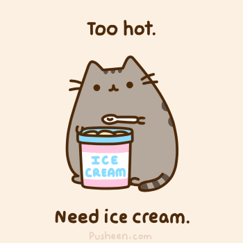

Pusheen is an animated webcomic series that depicts the life and dreams of the titular gray tabby cat.
Pusheen was created by artists Clare Belton and Andrew Duff as a character in their webcomic Everyday Cute, which was launched in May 2010. Only a few of the older comics were archived, however mentions of additional posts can be found on the sites Facebook page and Twitter account. The comics revolved around the lives of the characters modeled after Belton, Duff, their yellow dog named Carmen and Pusheen, a chubby gray tabby cat based on Beltons childhood cat.
Outside of Tumblr, Pusheen has been featured on the sites Catster, the Daily Dot, LaughingSquid, novelty store Archie McPhees blog, I Can Has Cheezburger and Tumblr Storyboard, where her interview has accumulated 16,400 notes.As of August 2013, Pusheen’s official Facebook page, created in February 2012, has more than 1 million likes and the official Twitter account has more than 60,000 followers. On June 27th, 2012, Pusheen broke 25,000 followers on Tumblr. Though the current follower count is unknown, in an email to Know Your Meme in August 2012, the creators stated it is more than 350,000.
In June 2012,Belton announced that she was working on a Pusheen book, containing many comics from the site as well as 25% never-before-seen material. The book, titled I Am Pusheen the Cat, is slated to be released on October 29th, 2013.
| 1 | 2 | 3 |
| 4 | 5 | 6 |
| 7 | 8 | 9 |
| Subject | English | German |
| Name | Amy | Ron |
| Mark | A | B |